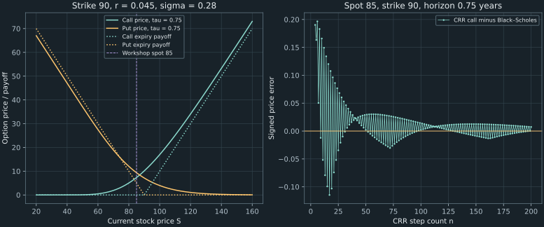

16. Geometric Brownian motion and Black–Scholes
Priya must value a European call and put on a stock priced at 85, with strike 90, nine months to expiry, continuously compounded annual interest rate 4.5%, and annual volatility 28%. Under the no-dividend Black–Scholes model, the call is 7.331655943 and the put is 9.344841938. Neither calculation requires a forecast of the stock's historical mean return. Understanding that absence is the central task of this chapter.
We construct the lognormal transition model, connect it to the replication-based binomial prices already derived, and integrate the terminal payoff to obtain the formula. The resulting partial differential equation then supplies the computational problem for the next chapter. This route distinguishes a distribution for forecasting from the probability weights that price a replicable claim.
Source spine: recording 46, the pricing equation and boundaries, recording 47, geometric Brownian motion, and recording 51, the complete binomial/continuous workshop. The payoff and boundary exercises at the start of recording 50 are included here; its grid calculations belong to Chapter 17. The terminal-limit argument, detailed Gaussian integration, inference example, and boundary stress test are elaborations.
16.1 Declare the contract and the probability question Recording 51, 9:53
Let $S=S_t$ be the stock price now, $K$ the strike paid or received on exercise, $T$ the expiry date, and $\tau=T-t$ the remaining time in years. A European call pays $(S_T-K)_+$ at $T$; a put pays $(K-S_T)_+$. Here $x_+=\max(x,0)$. A price today is distinct from that future payment. The option premium also matters when calculating the buyer's profit, as in Chapter 7.
The running case is $(S,K,r,\sigma,\tau)=(85,90,0.045,0.28,0.75)$. The rate $r$ is continuously compounded, so a certain unit at expiry costs $e^{-r\tau}$ now. Volatility $\sigma$ is the standard deviation rate of log returns, measured per square root of a year. It is not the variance: the annualized variance rate is $\sigma^2$.
Assume a non-dividend-paying stock, a bank account earning the constant rate $r$, constant $\sigma>0$, frictionless trading, divisible holdings, and unrestricted borrowing and shorting within the ideal model. Trading and the stock path are continuous in the limiting description. These assumptions make the Black–Scholes benchmark a precise mathematical object; they are not empirical claims that every stock or trading desk satisfies it.
Two probability questions will appear. Under a physical model $P$, a drift $\mu$ describes the stock's modeled expected growth. Under pricing weights $Q$, the discounted stock has zero expected change. In the finite complete binomial market, Chapter 8 obtained $Q$ by replication and no arbitrage, independently of the physical up probability. We will take that finite-market price limit rather than choose $Q$ because investors happen to be risk neutral.
The European formula prices an expiry-only payoff. An American holder may exercise earlier, so its value must also satisfy an exercise constraint. The same differential operator governs its continuation region, but the European equation alone does not solve the American problem. Chapter 17 introduces the obstacle and exercise boundary.
The lecture also motivates options as insurance against exchange-rate movements. For example, an importer who must buy foreign currency later can cap that purchase's exchange rate with an appropriately specified currency call, paying a premium for the right. The hedge's currency amount, strike, and expiry must match the exposure being addressed. A pricing equation values the specified contract; it does not by itself decide which exposure to hedge or make the premium disappear.
16.2 Specify a process, not just a normal marginal Recording 47, 10:55
A stochastic process specifies random variables jointly across time. A standard Brownian motion $W_t$ starts at $W_0=0$, has continuous paths almost surely, has independent increments over disjoint time intervals, and satisfies $W_{t+h}-W_t\sim N(0,h)$ for $h>0$. The increment law depends only on the elapsed time, so increments are stationary. In $N(m,v)$, the second argument is variance, not standard deviation. Brownian existence is an underlying mathematical result, not something established by plotting random steps.
For $0\leq s\leq t$, independence and zero increment mean imply $E[W_sW_t]=E[W_s(W_s+W_t-W_s)]=s$. Thus $\operatorname{Cov}(W_s,W_t)=\min(s,t)$. The statement $W_t\sim N(0,t)$ follows from the process definition, but it does not replace it. For example, $X_t=\sqrt t\,Z$, using the same $Z\sim N(0,1)$ at every date, has continuous paths and those same individual marginal laws. Its covariance is $\sqrt{st}$, so it does not have Brownian independent increments. Such a construction would change path-dependent prices and conditional transitions.
Why the standard deviation scales as a square root
Suppose centered shocks have stationary independent increments with finite variance, and let $v(h)$ denote the variance over duration $h$. Adding successive increments gives $v(h+k)=v(h)+v(k)$. If $v$ is continuous at zero, repeated subdivision first yields $v(q)=qv(1)$ for positive rational $q$, and continuity extends this to all nonnegative real durations. Hence $v(h)=\sigma^2h$ and the standard deviation is $\sigma\sqrt h$. The assumptions justify the scaling; elapsed time alone does not force every financial process to have it.
A fixed-variance shock multiplied by $h$ would instead have variance proportional to $h^2$. Combining two independent length-$h$ shocks would give twice that variance, whereas the same formula at length $2h$ would give four times it. This is the consistency issue behind the lecture's adjustment of its time-dependent shock coefficient.
Quadratic variation explains a second-order term that survives
On an equal partition of $[0,H]$ into $n$ intervals, set $Q_n=\sum_{j=1}^n(\Delta W_j)^2$. Independent normal increments give $E[Q_n]=H$ and $\operatorname{Var}(Q_n)=n\,2(H/n)^2=2H^2/n$. Consequently $Q_n\to H$ in mean square. The fourth normal moment used here is $E[Z^4]=3$, obtainable by two integrations by parts against the normal density. The sum of squared Brownian increments survives refinement even though each increment tends to zero.
This calculation explains why ordinary first-order chain-rule reasoning is inadequate. A Taylor term involving $(\Delta W)^2$ can accumulate into a time integral. The notation $(dW)^2=dt$ records that quadratic-variation effect; it is not an equality between ordinary real differentials or an instruction to differentiate a Brownian path.
The process definition and covariance can be checked against Gamarnik's MIT notes, Lecture 6, §§3–4. The elementary equal-partition calculation here supplies the specific mechanism needed below. A construction of Wiener measure and a general stochastic-integration theory lie beyond this chapter.
16.3 Exponentiate Brownian motion with a declared drift convention Recording 47, 6:05
Define geometric Brownian motion with initial $S_0>0$ by
\[ S_t=S_0\exp\!\left((\mu-\tfrac12\sigma^2)t+\sigma W_t\right).\tag{16.1} \]For any fixed finite date, this is strictly positive. In fact it remains positive throughout each finite time interval almost surely because Brownian paths are continuous and therefore bounded there. The model allows very small positive prices but never reaches zero or jumps to default. Limited liability motivates excluding negative equity prices; it does not establish that a positive lognormal diffusion captures all equity risks.
Write $a=\mu-\sigma^2/2$. Independent Brownian increments give the conditional transition, given all modeled information through time $t$,
\[ \log\frac{S_{t+h}}{S_t}=ah+\sigma\sqrt h\,Z, \qquad Z\sim N(0,1)\text{ independent of past information}.\tag{16.2} \]Thus the future conditional law depends on the past through the current stock price and elapsed time. This is the Markov property for the stock under the specified model. The log return has mean $ah$ and variance $\sigma^2h$. The simple return $S_{t+h}/S_t-1$ has a different mean and a nonnormal distribution.
The half-variance correction is a parameterization, not a cure for explosion
Let $\phi(z)=e^{-z^2/2}/\sqrt{2\pi}$ denote the standard normal density. Completing the square gives
\[ E[e^{cZ}]=\int_{-\infty}^{\infty}e^{cz}\phi(z)\,dz =e^{c^2/2}\int_{-\infty}^{\infty}\phi(z-c)\,dz=e^{c^2/2}.\tag{16.3} \]Applying this identity to (16.2) yields the moments
\[ E[S_{t+h}\mid S_t]=S_te^{\mu h},\qquad \operatorname{Var}(S_{t+h}\mid S_t)=S_t^2e^{2\mu h}(e^{\sigma^2h}-1).\tag{16.4} \]The subtraction $\sigma^2/2$ in (16.1) makes $\mu$ the instantaneous arithmetic expected-growth rate, since $E[S_{t+h}/S_t-1]=\mu h+O(h^2)$. If instead we wrote $S_t=S_0e^{bt+\sigma W_t}$, we would simply have arithmetic growth rate $b+\sigma^2/2$. Neither convention is intrinsically inconsistent. Both have finite moments at every finite time. Jensen's inequality explains why exponentiating a centered Gaussian raises its mean above one; it does not demand this particular name for the drift or prove that an uncorrected exponential would explode at a finite time.
Interpret the stochastic differential equation precisely
The customary shorthand is $dS_t=\mu S_t\,dt+\sigma S_t\,dW_t$. Its meaning is the integral equation
\[ S_t=S_0+\int_0^t\mu S_s\,ds+\int_0^t\sigma S_s\,dW_s.\tag{16.5} \]The last integral is an Itô integral: suitable sums use the integrand at the left endpoint, before the next random increment is observed, and are extended by mean-square limits under the required square-integrability conditions. It is not an ordinary integral against a path derivative. Formula (16.1) has finite moments on every finite horizon, supplying the needed integrability for this example.
For a smooth function $f(t,W_t)$, Itô's formula gives $df=(f_t+f_{ww}/2)dt+f_wdW_t$. We use this theorem here, rather than claim that the single quadratic-variation calculation proves its general construction. For $f(t,w)=S_0e^{at+\sigma w}$, its derivatives are $f_t=af$, $f_w=\sigma f$, and $f_{ww}=\sigma^2f$. Therefore $df=(a+\sigma^2/2)fdt+\sigma f\,dW_t=\mu fdt+\sigma f\,dW_t$, verifying that the explicit exponential satisfies (16.5).
MIT Lecture 17, §§1–3 states the Itô-process and smooth-transformation results used in this verification. The time variable can be included as a deterministic component. The stated identity is used under localization or sufficient integrability, not as a rule for arbitrary nonsmooth payoffs at expiry.
At this stage $\mu$ may describe a physical forecasting model. An option price still needs the pricing argument: discounting the physical expected payoff at $r$ would usually give the wrong answer. The next section obtains the appropriate lognormal law from finite replication prices.
16.4 Obtain the pricing law from the binomial model Recording 47, 16:21
Fix a horizon $\tau$ and use $n$ CRR steps of length $h=\tau/n$. In each step, the stock multiplies by $u=e^{\sigma\sqrt h}$ or $d=e^{-\sigma\sqrt h}$, and the bank by $G=e^{rh}$. Chapter 8's replication argument gives the pricing weight
\[ q_h=\frac{e^{rh}-e^{-\sigma\sqrt h}} {e^{\sigma\sqrt h}-e^{-\sigma\sqrt h}}, \qquad V_n=e^{-r\tau}E_{Q_n}[g(S_n)].\tag{16.6} \]Here $g$ is the terminal payoff, and under $Q_n$ the successive up/down choices are independent with up probability $q_h$. For sufficiently fine steps, $d<G<u$, equivalently $|r|\sqrt h<\sigma$, so $0<q_h<1$. This expectation is the finite model's replication price. The physical probability of an up step has not entered it.
Show the terminal log return converges to a Gaussian
Let $Y_{n,j}$ equal $\sigma\sqrt h$ or $-\sigma\sqrt h$ with these pricing probabilities. The terminal log return is $L_n=\sum_{j=1}^nY_{n,j}$. Expanding numerator and denominator in (16.6) gives
\[ q_h=\frac12+\frac{r-\sigma^2/2}{2\sigma}\sqrt h+O(h), \qquad E_{Q_n}Y_{n,j}=(r-\sigma^2/2)h+O(h^{3/2}).\tag{16.7} \]A triangular-array argument is needed because the step distribution changes with $n$. We can see it directly through a characteristic function. For fixed real $z$ and $a_Q=r-\sigma^2/2$,
\[ \begin{aligned} E[e^{izY_{n,j}}] &=\cos(z\sigma\sqrt h)+i(2q_h-1)\sin(z\sigma\sqrt h)\\ &=1+(iz a_Q-\tfrac12z^2\sigma^2)h+O(h^{3/2}). \end{aligned}\tag{16.8} \]Independence raises this expression to the $n$th power. Since $nh=\tau$, its logarithm tends to $(iz a_Q-z^2\sigma^2/2)\tau$, the log characteristic function of $N(a_Q\tau,\sigma^2\tau)$. The characteristic-function continuity theorem therefore gives $L_n\Rightarrow N(a_Q\tau,\sigma^2\tau)$. Exponentiation is continuous, so $S_n\Rightarrow S\exp(a_Q\tau+\sigma\sqrt\tau Z)$. The symbol $\Rightarrow$ means convergence in distribution at this terminal date. We have not proved convergence of entire paths or of every path-dependent or exercise-dependent claim.
Distributional convergence alone is insufficient for an unbounded call
The put payoff is continuous and bounded by $K$, so its expectations converge under this distributional limit. The call is continuous but unbounded. A small probability of an enormous terminal price could spoil convergence of its mean even if terminal distributions converge.
For these CRR stocks, the second moment controls that danger. Expanding one step gives
\[ E[e^{2Y_{n,j}}] =\cosh(2\sigma\sqrt h)+(2q_h-1)\sinh(2\sigma\sqrt h) =1+(2r+\sigma^2)h+O(h^{3/2}).\tag{16.9} \]Hence $E[S_n^2]=S^2(E[e^{2Y_{n,1}}])^n\to S^2e^{(2r+\sigma^2)\tau}$ and these second moments are uniformly bounded over the sufficiently fine trees. Since $0\leq(S_n-K)_+\leq S_n$, the contribution beyond a cutoff $M$ is at most $E[S_n\mathbf1_{S_n>M}]\leq E[S_n^2]/M$. It vanishes uniformly as $M\to\infty$. Apply bounded-payoff convergence first to a capped call, then remove the cap using this bound and the limiting lognormal second moment. This proves convergence of the call expectations too.
The resulting vanilla European price is consequently
\[ V(S,t)=e^{-r\tau}E\!\left[g\!\left(S e^{(r-\sigma^2/2)\tau+\sigma\sqrt\tau Z}\right)\right].\tag{16.10} \]The rate $r$ replaces the physical $\mu$ because the finite hedging prices selected (16.6). It is not an estimate of the stock's historical return. Nor does this derivation say that investors lack risk aversion. Pricing a replicable claim and selecting a utility-maximizing portfolio are different questions.
The finite replication foundation is Cox, Ross, and Rubinstein's binomial construction, already developed in Chapter 8. The explicit characteristic-function and uniform-tail steps above make the particular terminal vanilla limit inspectable. A general continuous-market completeness or change-of-measure theorem is not asserted by this calculation.
16.5 Integrate the payoff and obtain the Greeks Recording 51, 10:41
Let $\Phi(x)=\int_{-\infty}^x\phi(z)\,dz$. For $S,K,\sigma,\tau>0$, define
\[ d_1=\frac{\log(S/K)+(r+\sigma^2/2)\tau}{\sigma\sqrt\tau}, \qquad d_2=d_1-\sigma\sqrt\tau.\tag{16.11} \]In the pricing transition (16.10), exercise of a call occurs when $Z>-d_2$. Separate the stock and strike parts of the call payment:
\[ C=e^{-r\tau}\left[ S e^{(r-\sigma^2/2)\tau}\int_{-d_2}^{\infty} e^{\sigma\sqrt\tau z}\phi(z)\,dz-K\Phi(d_2)\right].\tag{16.12} \]The identity $e^{cz}\phi(z)=e^{c^2/2}\phi(z-c)$ moves the first integral's lower endpoint to $-d_2-c=-d_1$. Its integral becomes $e^{\sigma^2\tau/2}\Phi(d_1)$. The exponential factors multiplying $S$ cancel. The put follows either by integrating below $-d_2$ or by the pointwise payoff identity $(x-K)_+-(K-x)_+=x-K$:
\[ \boxed{C=S\Phi(d_1)-Ke^{-r\tau}\Phi(d_2)},\qquad \boxed{P=Ke^{-r\tau}\Phi(-d_2)-S\Phi(-d_1)}.\tag{16.13} \]Consequently $C-P=S-Ke^{-r\tau}$. This is put–call parity with a discounted strike, matching the replicating packages in Chapter 7. Here $\Phi(d_2)=Q(S_T>K)$ is the pricing probability of expiry exercise. It is not generally the physical probability of exercise, and exercise is itself distinct from making a profit after paying the premium.
For Priya, $d_1=0.024708884874$ and $d_2=-0.217778228186$. Substitution gives $C=7.331655942868$ and $P=9.344841937807$, or 7.33 and 9.34 to two decimals. The call is currently out of the money because $85<90$, but possible positive expiry payments give it a positive present price.
Differentiate the formula without losing the cancellation
Let $D=e^{-r\tau}$. Expanding $d_1^2-d_2^2=2\log(S/K)+2r\tau$ proves $S\phi(d_1)=KD\phi(d_2)$. This identity cancels the terms produced by differentiating the normal coordinates. Because $d_{1,S}=d_{2,S}=1/(S\sigma\sqrt\tau)$, differentiation with respect to $S$ gives
\[ \Delta_C=C_S=\Phi(d_1),\quad \Delta_P=\Phi(d_1)-1, \qquad \Gamma=C_{SS}=P_{SS}=\frac{\phi(d_1)}{S\sigma\sqrt\tau}.\tag{16.14} \]The call's delta is therefore $\Phi(d_1)$, not its exercise probability $\Phi(d_2)$. Delta measures the local price response per unit change in today's stock price. Gamma measures the change in delta, or equivalently the curvature of price in $S$.
For volatility, $d_{1,\sigma}-d_{2,\sigma}=\sqrt\tau$. The same density cancellation gives the vega of either option,
\[ \mathcal V=C_\sigma=P_\sigma=S\phi(d_1)\sqrt\tau>0.\tag{16.15} \]Vega here is per unit of decimal volatility. Multiplying by 0.01 gives the first-order effect of one percentage point of volatility. Similarly, $d_{1,\tau}-d_{2,\tau}=\sigma/(2\sqrt\tau)$ and $D_\tau=-rD$ give $C_\tau=S\phi(d_1)\sigma/(2\sqrt\tau)+rKD\Phi(d_2)$. Calendar-time theta holds $S$ fixed and uses $\partial_t=-\partial_\tau$, so
\[ \Theta_C=-\frac{S\phi(d_1)\sigma}{2\sqrt\tau}-rKD\Phi(d_2), \qquad \Theta_P=-\frac{S\phi(d_1)\sigma}{2\sqrt\tau}+rKD\Phi(-d_2).\tag{16.16} \]The units of theta are price per year of time passage. A daily convention requires an explicitly chosen day count; it should not be inferred from these annual formulas.
| Option | Delta | Gamma | Vega per unit $\sigma$ | Theta per year |
|---|---|---|---|---|
| Call | 0.509856416 | 0.019349507 | 29.358039370 | −7.100443623 |
| Put | −0.490143584 | 0.019349507 | 29.358039370 | −3.184850253 |
Strict monotonicity gives a precise implied-volatility range
With positive $S,K,\tau$ and fixed finite $r$, (16.15) proves that price is strictly increasing in every finite $\sigma>0$. For the call, the limit as $\sigma\downarrow0$ is $\max(S-KD,0)$, and the limit as $\sigma\to\infty$ is $S$. The latter follows from $d_1\to\infty$ and $d_2\to-\infty$. For the former, the pricing terminal stock becomes the deterministic $Se^{r\tau}$; it also follows directly from (16.13), including the forward-at-the-money case $S=KD$.
It follows by continuity and strict monotonicity that a quoted call price strictly between $\max(S-KD,0)$ and $S$ has exactly one positive finite Black–Scholes implied volatility. The put's corresponding range is $\max(KD-S,0)<P<KD$. Quotes at an endpoint require a limiting volatility, and quotes outside the range have no solution in this model. This is stronger than the finite-CRR statement in Chapter 10: a coarse tree can have flat price segments in volatility. It also says nothing about how well the lognormal model fits observed strike-dependent prices.
At $\tau=0$, use the terminal payoff; at $\sigma=0$ with $\tau>0$, use the discounted deterministic payoff. Dividing by $\sigma\sqrt\tau$ at those endpoints is invalid. The companion implements these price limits separately and restricts the displayed Greek formulas to the positive interior. It uses ordinary floating-point differences, so very small option values can lose relative accuracy even when absolute errors are small.
Black and Scholes (1973), printed pp.640–644, gives the idealized assumptions, pricing equation, and call formula. The Gaussian integration, differentiation, and endpoint arguments above derive the displayed relationships with this chapter's notation.
16.6 Recover the differential equation and its boundaries Recording 46, 15:58
A closed formula and a differential equation can describe the same price. Define $V$ by the Gaussian pricing expectation (16.10). The independent multiplicative transitions and the tower property of conditional expectation give, for $0<h<\tau$,
\[ V(S,t)=e^{-rh}E_Q[V(S+\Delta S,t+h)\mid S_t=S].\tag{16.17} \]The exact short transition has $\Delta S=S[e^{(r-\sigma^2/2)h+\sigma\sqrt hZ}-1]$. Its Gaussian moments give
\[ \begin{aligned} E_Q\Delta S&=S(e^{rh}-1)=rSh+O(h^2),\\ E_Q(\Delta S)^2&=S^2[e^{(2r+\sigma^2)h}-2e^{rh}+1] =\sigma^2S^2h+O(h^2). \end{aligned}\tag{16.18} \]Also $E_Q|\Delta S|^3=O(h^{3/2})$. For example, $|e^x-1|\leq|x|e^{|x|}$, applied to $x=(r-\sigma^2/2)h+\sigma\sqrt hZ$, gives the order using finite normal moments and exponential moments.
At an interior point before expiry, expand $V(S+\Delta S,t+h)$ through first order in time and second order in stock. Sufficient smoothness and growth control on the derivatives allow the expected remainder to be $o(h)$: bounded local third stock derivatives control the spatial remainder, mixed terms have order at most $hE|\Delta S|$, and Gaussian tails allow localization. The explicit vanilla formula is smooth for $S>0$, $t<T$ and has the necessary growth control away from expiry. We do not apply this smooth expansion at the payoff's strike kink at $T$.
Substituting (16.18) into (16.17), expanding $e^{-rh}=1-rh+O(h^2)$, subtracting $V$ and dividing by $h$ yields
\[ \boxed{V_t+\tfrac12\sigma^2S^2V_{SS}+rSV_S-rV=0}, \qquad S>0,\quad t<T.\tag{16.19} \]The second derivative measures the effect of local dispersion, the first stock derivative the pricing drift, and $-rV$ discounting. $V_t$ is a partial derivative at fixed $S$, not the value at date $t$. With time to maturity, $U(S,\tau)=V(S,T-\tau)$ satisfies $U_\tau=\sigma^2S^2U_{SS}/2+rSU_S-rU$. Confusing these time directions reverses a grid update.
The same cancellation appears in a self-financing hedge
Under a physical GBM with drift $\mu$, Itô's formula for smooth $V$ gives $dV=(V_t+\mu SV_S+\sigma^2S^2V_{SS}/2)dt+\sigma SV_SdW^P$. A self-financing portfolio of value $H$, holding $\Delta$ shares and bank balance $H-\Delta S$, has gains
\[ dH=\Delta\,dS+r(H-\Delta S)dt.\tag{16.20} \]Taking $H=V$ and $\Delta=V_S$ matches the random term. Matching the drift then cancels $\mu SV_S$ on both sides and gives (16.19). This explains the hedge interpretation and the absence of the physical drift. It is essential to use the gains equation: naively differentiating a rebalanced marked position $V-\Delta S$ while omitting changes in $\Delta$ would not establish self-financing.
This algebra is the local condition for a smooth admissible replication in the ideal market. A general existence, admissibility, and continuous-market no-arbitrage theorem is outside the proof given here. The preceding finite-tree limit independently established the stated European price. Discrete rebalancing, transaction costs, jumps, and misspecified volatility create risks not removed by this local calculation.
Terminal conditions and an infinite-domain boundary
The expiry data are $C(S,T)=(S-K)_+$ and $P(S,T)=(K-S)_+$. Extending the diffusion to the absorbing state $S=0$ gives $C(0,t)=0$ and $P(0,t)=KD$. At large $S$, the put tends to zero: its payoff tends to zero for each positive lognormal multiplier and is bounded by $K$, so dominated convergence applies. Parity then yields $C(S,t)-(S-KD)\to0$ as $S\to\infty$.
A numerical upper boundary $S_{\max}$ is a truncation of this unbounded state space, not a maximum possible GBM price. Imposing $C(S_{\max},t)=S_{\max}-KD$ discards exactly the positive put price there, because the exact identity is $C-(S-KD)=P$. Its adequacy therefore depends on volatility, horizon, rate, strike, and the desired accuracy, not on a universal multiple of strike.
For recording 50's $K=75$, $r=0.045$, $\tau=0.75$, and $S_{\max}=250$, the discounted strike is 72.510988329, giving the asymptotic call boundary 177.489011671. Adding an explicitly specified $\sigma=0.28$ gives exact model call 177.489012657 and put about $9.859444409\times10^{-7}$. With the same inputs but a stress volatility $\sigma=1$, the put is 3.749633351 and the exact call is 181.238645022. The same upper boundary is then materially inaccurate. These volatility choices are declared diagnostics, not additional data recovered from the earlier payoff exercise.
Boundary truncation error and the interior grid's discretization or stability errors are different. Even an excellent boundary approximation cannot rescue an unstable update. Conversely, shrinking time steps on an inadequate finite domain does not remove its boundary bias. These distinctions will organize Chapter 17.
16.7 Complete the discrete/continuous workshop Recording 51, 0:45
The workshop begins with a different stock: $S_0=64$, $r=0.055$, $\sigma=0.32$, and one step of $h=0.0625$ years. Thus $\sigma\sqrt h=0.08$, $u=1.083287067675$, $d=0.923116346387$, and $q=0.501509064491$. The pricing expectation of the next stock is 64.220378559. This agrees with $64e^{0.055(0.0625)}$ because
\[ qu+(1-q)d =\frac{(G-d)u+(u-G)d}{u-d}=G.\tag{16.21} \]This equality is the defining martingale restriction, not an accidental agreement of rounded output. Discounting by the bank growth factor makes the expected next discounted stock equal its present value.
Separate the workshop's two three-year parameter sets
The later narration reports three-year log-return mean 0.0174, variance 0.2352, and expected stock about 73.25. Those values correspond to $r=0.045$ and $\sigma=0.28$, rather than the opening $0.055$ and $0.32$. Both calculations are reproduced below with $S_0=64$ and $\tau=3$. They are separate examples, not one continuous numerical state.
| Inputs $(r,\sigma)$ | $E_Q\log(S_T/64)$ | $\operatorname{Var}_Q\log(S_T/64)$ | $E_Q S_T$ |
|---|---|---|---|
| (0.055, 0.32), opening inputs | 0.0114 | 0.3072 | 75.481159598 |
| (0.045, 0.28), later reported case | 0.0174 | 0.2352 | 73.250354198 |
In the later case, $\log(E_QS_T/64)=r\tau=0.135$, whereas $E_Q\log(S_T/64)=0.0174$. Their difference is half the log-return variance, 0.1176. The exponential's convexity means $E[e^L]>e^{E[L]}$ for a nondegenerate normal $L$. Averaging a log return and exponentiating it does not give the mean stock price.
Reprice Priya's option rather than accepting a convergence table on faith
Return to $S=85$, $K=90$, $r=0.045$, $\sigma=0.28$, and $\tau=0.75$. Running the public Chapter 8 rollback with the corresponding CRR factors at each $n$ gives:
| Steps $n$ | Call price | Signed error, CRR minus closed form |
|---|---|---|
| 4 | 7.521959610 | +0.190303667 |
| 25 | 7.297104109 | −0.034551834 |
| 100 | 7.333795530 | +0.002139587 |
| 1000 | 7.332733923 | +0.001077980 |
The prices approach the continuous benchmark, but increasing $n$ does not guarantee a smaller error at every successive count. The payoff kink's changing alignment with terminal nodes produces oscillation. A convergence plot should expose this behavior rather than draw a monotone error curve inferred from the limiting theorem.

The workshop's volatility comparison also follows from actual formula evaluation:
| $\sigma$ | Call | Put |
|---|---|---|
| 0.20 | 4.982927634 | 6.996113629 |
| 0.28 | 7.331655943 | 9.344841938 |
| 0.36 | 9.677331845 | 11.690517840 |
Both prices rise while their difference remains the same parity value $S-KD$. This is consistent with equal positive vegas. The approximate effect of a small volatility change is vega times that change; the full eight-percentage-point comparisons above are repricings rather than a claim that vega stays constant over the interval.
Keep expiry payoffs distinct from discounted boundaries
Recording 50's earlier exercise uses strike 75. If the terminal stock is 92, the call and put payments are 17 and 0; if it is 61, they are 0 and 14. Interest and volatility do not enter these already-determined expiry payments. Before expiry, the zero-stock put boundary is instead the discounted certain payment $75e^{-0.045(0.75)}=72.510988329$. The finite upper call boundary and its approximation error were evaluated in §16.6. Its later grid exercise changes the strike again, to 90; Chapter 17 keeps that change explicit.
Agreement among a closed formula, tree, and independently stable PDE scheme is a valuable numerical check. It is not proof that a model fits market data, nor does a successful European check by itself establish correctness of an American exercise algorithm.
16.8 Estimate a physical model without confusing it with a pricing law Recording 47, 19:16
Suppose $n$ observed log returns $\ell_i=\log(S_{i\delta}/S_{(i-1)\delta})$ are generated by one constant-parameter physical GBM at equal spacing $\delta$ years. They are independent normal variables with mean $a_P\delta=(\mu-\sigma^2/2)\delta$ and variance $\sigma^2\delta$. Missing observations, varying spacing, or overlapping returns would change this contract.
Let $\bar\ell=n^{-1}\sum_i\ell_i$ and $s_\ell^2=(n-1)^{-1}\sum_i(\ell_i-\bar\ell)^2$. Matching those quantities to the model moments gives
\[ \widehat\sigma^2=\frac{s_\ell^2}{\delta},\qquad \widehat\mu=\frac{\bar\ell}{\delta}+\frac12\widehat\sigma^2.\tag{16.22} \]The variance estimate uses the explicitly chosen unbiased sample-variance convention. The normal maximum-likelihood variance instead divides the squared deviations by $n$, producing a different finite-sample estimate. Neither convention permits dividing a standard deviation by $\delta$: volatility scales by $1/\sqrt\delta$, while variance scales by $1/\delta$.
For an original synthetic example, use these twelve monthly log returns:
\[ (0.020,-0.010,0.030,-0.020,0.010,0, 0.025,-0.015,0.018,0.012,-0.005,0.022),\qquad\delta=1/12. \]The executed mean is 0.00725 and sample variance is 0.000281477272727. Equation (16.22) gives $\widehat\sigma=0.058118218079$ and $\widehat\mu=0.088688863636$. The maximum-likelihood volatility for the same data is 0.055643957444. These are calculations on declared teaching data, not estimates of the stock in Priya's option example or of an observed market series.
A drift estimate is limited by elapsed history
Even if $\sigma$ were known, estimating $a_P$ by $\bar\ell/\delta$ has variance $\sigma^2/(n\delta)$. Its standard error is $\sigma/\sqrt H$ for total observation horizon $H=n\delta$. This follows by dividing the mean's variance $\sigma^2\delta/n$ by $\delta^2$. Within this ideal model, sampling more frequently over the same total horizon does not reduce that drift standard error. A longer observation horizon supplies information that a denser timestamp grid alone cannot provide.
The physical drift estimates a forecasting quantity. Setting it equal to $r$ is not a way to estimate historical returns. Risk-neutral pricing places $r$ in a different conditional expectation selected by the trading model. In the ideal constant diffusion, the volatility coefficient is shared between the physical and pricing descriptions, but actual historical estimates and option-implied volatilities need not agree: finite samples, time variation, model error, and the option contract all matter.
A fitted normal log-return model should therefore be assessed rather than treated as an empirical consequence of Black–Scholes. The lecture's caution about return tails motivates checking distributional adequacy; this chapter makes no universal claim that every return series has one particular tail law. The reported synthetic estimates supply no evidence about real financial returns.
16.9 Make the numerical and model contracts explicit
The full companion ch16_black_scholes.py implements vanilla prices and the displayed Greeks, GBM moments, equal-spacing estimation, and every workshop table. It reuses the already checked Chapter 8 CRR rollback. A separate fixed-grid Gaussian-payoff integral splits at the exercise threshold and supplies an independent numerical comparison with the closed formula. Price parity, analytic versus finite-difference sensitivities, the PDE residual, and endpoint prices provide additional checks with different failure modes.
The short standalone calculation below has the stated interior preconditions $S,K,\sigma,\tau>0$ and finite moderate inputs. The full program validates scalar types, nonnegativity, and special price limits. Its use of erfc for the normal CDF preserves small left-tail probabilities better than subtracting a nearly unit CDF, but subtracting the two price terms can still lose relative accuracy for an extremely small option premium.
import math
S, K, r, sigma, tau = 85.0, 90.0, 0.045, 0.28, 0.75
def Phi(x):
return 0.5 * math.erfc(-x / math.sqrt(2.0))
scale = sigma * math.sqrt(tau)
d1 = (math.log(S / K) + r * tau) / scale + 0.5 * scale
d2 = d1 - scale
call = S * Phi(d1) - K * math.exp(-r * tau) * Phi(d2)
assert abs(call - 7.33165594286835) < 3e-13
print(f"European call: {call:.9f}")Finite tests support the declared examples; they do not certify unrestricted extreme-input arithmetic. Likewise, numerical convergence to this formula checks implementation against a model benchmark, not empirical model validity. A nonconstant implied-volatility surface cannot generally be represented by the one constant $\sigma$ assumed here. Dividends, stochastic rates, jumps, transaction costs, and path-dependent contracts require their own specifications and pricing arguments.
The lectures motivate moving from a tree to equations partly through computational cost. That cost depends on the claim, grid, number of required prices, and accuracy. An analytic vanilla formula is inexpensive, but a PDE is not automatically faster than every tree, and a small time step does not invalidate the binomial model by itself. The established CRR limit and the next chapter's stability restrictions provide more useful numerical guidance than an unconditional speed ranking.
16.10 Exercises with worked solutions
Exercise 16.1: normal marginals do not define Brownian motion
Let $X_t=\sqrt t\,Z$ with one standard normal variable $Z$ shared across all dates. Find its covariance and explain why it is not Brownian motion despite $X_t\sim N(0,t)$. Separately show why equal-mesh sums of squared Brownian increments converge in mean square to elapsed time.
Worked solution
Since $E[Z^2]=1$, $E[X_sX_t]=\sqrt{st}$, whereas Brownian covariance for $s\leq t$ is $s$. For example, the covariance of $X_s$ with $X_t-X_s$ is $\sqrt{st}-s$, nonzero when $0<s<t$. Its increments are therefore dependent. For actual Brownian increments of length $H/n$, each square has mean $H/n$ and variance $2(H/n)^2$. Independence makes the sum's mean $H$ and variance $2H^2/n$. Thus $E[(Q_n-H)^2]\to0$. This calculation concerns a whole refinement sequence of random increments; it is not pointwise differentiation of a path.
Exercise 16.2: interpret the workshop's two sets of moments
Using $S_0=64$ and a three-year horizon, calculate log-return mean, log-return variance and mean stock price first for $(r,\sigma)=(0.055,0.32)$, then for $(0.045,0.28)$. Why does exponentiating the log-return mean give a different answer?
Worked solution
The formulas are $m=(r-\sigma^2/2)3$, $v=3\sigma^2$, and $E_QS_T=64e^{3r}$. The first pair gives $m=0.0114$, $v=0.3072$, and mean stock 75.481159598. The second gives $m=0.0174$, $v=0.2352$, and mean stock 73.250354198. The narrated later values consequently belong to the second pair. For a normal log return $L$, $E[e^L]=e^{m+v/2}$, rather than $e^m$. The missing half-variance term explains the discrepancy; no inconsistency remains once parameters and the order of expectation/exponentiation are explicit.
Exercise 16.3: justify passing from a terminal limit to a call price
Suppose the terminal CRR stocks converge in distribution to the lognormal stock and their second moments have a finite common bound. Explain why this suffices for convergence of call prices. Why would merely quoting convergence in distribution leave a gap?
Worked solution
For a fixed cap $M$, the capped payoff $\min((x-K)_+,M)$ is bounded and continuous, so its expectation converges under distributional convergence. The discarded call tail is bounded by $E[S_n\mathbf1_{S_n>M}]\leq E[S_n^2]/M$. The common second-moment bound makes this uniformly small; the lognormal limit has a finite second moment too. Let $n\to\infty$ for the capped payoff, then $M\to\infty$, and multiply by the fixed discount factor. Unbounded payoffs can be affected by vanishingly rare large values, so distributional convergence without this additional tail control would be insufficient. Equation (16.9) supplies the required control for this CRR sequence.
Exercise 16.4: identify the correct probability and volatility inverse
Derive the call exercise probability and delta from the Gaussian representation. Explain why vega is positive and state the exact range of prices admitting a unique positive finite call implied volatility. Give the first-order effect of a one-percentage-point volatility increase in the running case.
Worked solution
The exercise event is $Z>-d_2$, so its pricing probability is $\Phi(d_2)$. Differentiating the price with respect to $S$ cancels the density terms using $S\phi(d_1)=KD\phi(d_2)$ and leaves delta $\Phi(d_1)$. Volatility differentiation leaves $S\phi(d_1)(d_{1,\sigma}-d_{2,\sigma})=S\phi(d_1)\sqrt\tau>0$. The continuous price rises from $\max(S-KD,0)$ at zero volatility to $S$ at infinite volatility, so precisely the strict interval between them has a unique positive finite inverse. At the given inputs the first-order one-point effect is $29.358039370(0.01)=0.293580394$ price units, not 29.358. This is a local approximation, and the probability is a pricing probability rather than a physical forecast.
Exercise 16.5: audit a finite upper boundary
For $K=75$, $r=0.045$, $\tau=0.75$, and $S_{\max}=250$, compute the call's large-stock boundary approximation. Show that its error equals the put price at the cutoff. What happens in the declared volatility stress test?
Worked solution
The discounted strike is $75e^{-0.03375}=72.510988329$, giving $250-72.510988329=177.489011671$. Exact parity gives $C-(250-KD)=P$, so setting the call to that approximation discards the put's entire remaining value. At $\sigma=0.28$ this error is about $9.859444409\times10^{-7}$; at $\sigma=1$ it is 3.749633351. Neither cutoff-to-strike ratio nor agreement of one boundary formula with its own implementation establishes negligible error. A stable interior solver must still assess finite-domain bias separately.
Exercise 16.6: annualize the estimator with its uncertainty
For the twelve monthly returns in §16.8, derive the annual volatility and drift estimates using sample variance. How does the likelihood volatility differ, and what does increasing sampling frequency at a fixed observation horizon do to the known-volatility log-drift standard error?
Worked solution
The mean is 0.00725 and variance with divisor 11 is 0.000281477272727. Dividing the latter by $1/12$ and taking the square root gives $\widehat\sigma=0.058118218079$. Adding half its square to $12(0.00725)$ gives $\widehat\mu=0.088688863636$. The likelihood volatility uses the variance with divisor 12, so it is $\widehat\sigma\sqrt{11/12}=0.055643957444$. For known true $\sigma$, $\operatorname{Var}(\bar\ell/\delta)=\sigma^2/(n\delta)=\sigma^2/H$, so its standard error is $\sigma/\sqrt H$. More subdivisions with the same $H$ do not change it in this model. This statement is about the log-drift estimator with known volatility; it is not an exact uncertainty formula for every estimated parameter or real return series.
16.11 Sources and reproducibility
Recording 46 supplies the computational motivation, PDE terms, and European boundary conditions. Recording 47 motivates positive prices, reconciles variance across time scales, introduces the exponential model, connects it to the lattice, and estimates its parameters. Recording 51's full workshop is recalculated, including both sets of three-year inputs, the one-step martingale identity, Priya's call and put, tree prices, and volatility changes. Recording 50's opening strike-75 payoff/boundary cases are completed here; the subsequent strike-90 grid exercise belongs to Chapter 17.
Black and Scholes (1973), “The Pricing of Options and Corporate Liabilities,” pp.640–644, provides the original assumptions, differential equation, and call formula. Gamarnik's MIT Lecture 6 supports the Brownian-process definition and covariance; Lecture 17 supplies the Itô formula used to verify the explicit SDE. The local terminal-limit, payoff integration, derivative, and boundary-error arguments state their own assumptions rather than claim to reproduce a full stochastic-calculus course.
Run python code/ch16_black_scholes.py to reproduce the workshop, moment/estimation outputs, independent payoff integral comparisons, parity, finite-difference sensitivities, PDE checks, price limits, and rejection cases. It imports the public Chapter 8 implementation. The figure program reproduces all displayed price curves and signed lattice errors in both layouts. The short embedded calculation runs with Python's standard library alone.
The computational conclusions concern the specified European constant-coefficient model and moderate teaching fixtures. They do not establish observed return behavior, market calibration, a universal fastest algorithm, a full path-space limit, certified floating-point error, or an American closed formula. The next task is to turn the backward equation into a grid while preserving its time direction, boundary meaning, and exercise constraints.